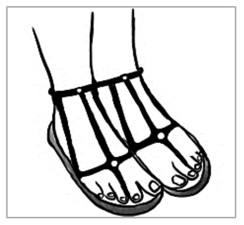

先讀文章、作答下方的題目，再展開最後的「看答案與文章結構」。也可以到互動練習線上作答，交卷後自動批改。
The flip-flop is the simplest shoe on the planet. It consists of a piece of rubber, plastic, leather, or woven material in the outline of a foot, with a strap holding the sandal to a wearer’s toes. The name comes from the sound the sandals make when they slap the walking feet.
The earliest record of people wearing the flip-flop comes from Egypt, but many ancient cultures had their own variants of the footwear. In the Greek version, the toe strap ran between the first and second toes, while Roman sandals had the strap between the second and third toes. The Mesopotamians wore the strap between the third and fourth toes. In India, “toe knob” sandals had a knob between the first and second toes.
Modern flip-flops derive from Japanese zōris, which were often worn with socks dividing the big toe from the rest, and were typically made of rice straw. During World War II, Japan seized much of Southeast Asia’s rubber. In 1945, devastated from the war, the country set about establishing a cheap industry that could rebuild its economy. The Japanese used their rubber reserves from the war to mass-produce the simplest Japanese footwear. Rubber thus replaced rice straw as the major material for the flip-flop.
In the 1950s, flip-flops became popular in the United States as soldiers returning from occupied Japan brought zōris home. The sandals have subsequently undergone redesign, often appearing in bright colors in line with Californian beach culture. They have remained popular due to their convenience, and are often worn with bathing suits or summer clothing. Some people also wear dressy versions for more formal occasions.
Despite their popularity, flip-flops provoke some questions. Their simple design is responsible for many foot injuries. Another issue is the suitability of exposing feet on the street and places other than the beach. But even more serious is their environmental impact: Millions of plastic discards end up in landfills or the ocean, releasing chemicals and at the same time taking centuries to decompose.
41.Which culture most likely created the sandals shown in the picture?

42.Why is the footwear discussed in the passage called “flip-flop”?
43.Which of the following is true about the modern development of the flip-flop?
44.Which of the following is NOT mentioned as a concern of wearing the flip-flop?
| 題號 | 官方答案 | 答對率 | 鑑別度 |
|---|---|---|---|
| 41 | (D) | 86% | 32 |
| 42 | (A) | 70% | 68 |
| 43 | (D) | 58% | 60 |
| 44 | (B) | 61% | 53 |
答對率與鑑別度出處：大考中心 109 學年度學科能力測驗統計圖表：英文科答對率及鑑別度表
逐題解析還在撰寫中，目前先提供官方答案、數據與文章結構。